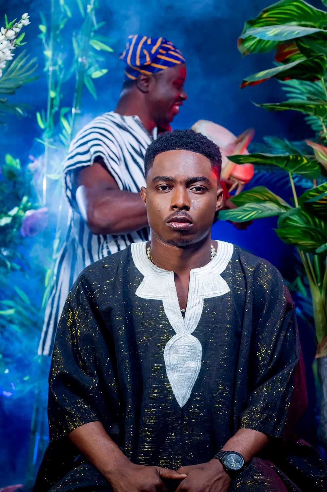
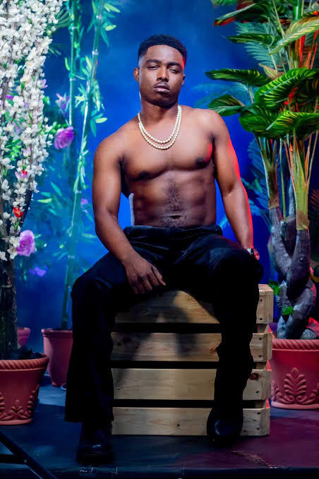
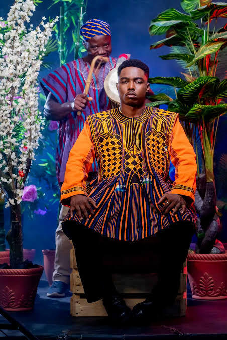
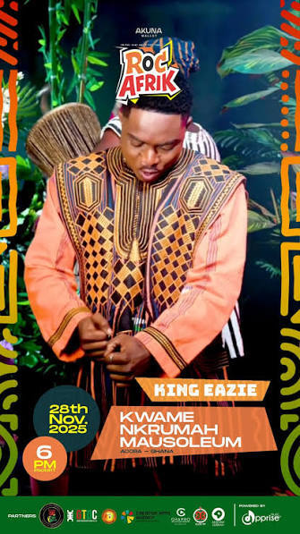

Music Portfolio · University Application
Keeper of the Luan — Voice of the North
A Ghanaian recording artist from the Northern Region, fusing the ancient rhythms of Mamprusi and Dagomba tradition with the living pulse of contemporary African music.

About the Artist
King Eazie is a Ghanaian singer, cultural musician, and performing artist hailing from the Northern Region of Ghana — home to the Mamprusi and Dagomba peoples, whose musical heritage stretches back centuries. His artistic identity is inseparable from the land and traditions that shaped him.
Signed to Zayon Music Label, King Eazie occupies a rare space in West African music: an artist equally fluent in ancestral sound and contemporary expression. His work is a conversation between the elders who taught him and the generation he now moves.
Inspired by Sam Cooke, Fela Kuti, Atongo Zimba, and Afro Moses, he carries the spirit of West Africa's most enduring storytelling tradition — through his voice, his drum, and his stage.



Musical Identity
King Eazie's music is built on the tonal and rhythmic foundations of Northern Ghanaian oral tradition — a living system of call-and-response, communal memory, and ceremonial rhythm passed directly through generations.
He layers Afrobeats grooves, Highlife warmth, and R&B vocal phrasing over traditional percussion structures — creating a sound that feels both ancestral and unmistakably current.
Through performance and recording, King Eazie advocates for the preservation of Northern Ghanaian musical heritage — ensuring the Luan talking drum, Mamprusi chants, and Dagomba rhythms reach global audiences.
The Instrument
"The drum does not simply keep time — it speaks. It carries names, histories, and the voices of those who came before."
Central to King Eazie's musical practice is the Luan talking drum — a sacred percussion instrument of the Mamprusi and Dagomba tribes of Ghana's Northern Region. Unlike conventional percussion, the Luan communicates pitch and language through the manipulation of drum tension, allowing skilled players to replicate the tonal patterns of spoken Dagbani.
This instrument has served as a vehicle for historical record-keeping, royal announcement, and communal ceremony for generations. King Eazie's integration of the Luan into contemporary song is both an artistic choice and an act of cultural stewardship.
Live Performance Record
2025
Freedom and Justice Park, Accra, Ghana
A landmark concert celebrating Ghanaian musical heritage and contemporary African sound.
2024
Central University, Prampam, Ghana
Featured performer at one of Ghana's celebrated annual music experiences.
2024
Labadi Beach Hotel, Accra, Ghana
Invited to perform at a prestigious national industry ceremony.
Ongoing
Active recording artist under Zayon Music Label, with distributed releases across major streaming platforms via Apprise Music.
Gallery
Connect